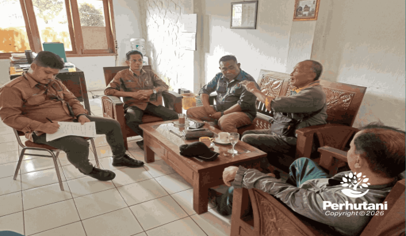

PERHUTANI, PURWAKARTA (23/01/2026)│ Perum Perhutani Kesatuan Pemangkuan Hutan (KPH) Purwakarta menerima kunjungan kerja Lembaga Masyarakat Desa Hutan (LMDH) Tapak Jabar pada Kamis (22/01). Kunjungan tersebut bertujuan untuk meningkatkan sinergi antara Perhutani dan LMDH dalam menjaga kelestarian hutan serta mendukung keberhasilan program pengelolaan hutan di wilayah KPH Purwakarta. Selain itu, pertemuan ini juga membahas peluang kerja sama dalam optimalisasi aset, ketahanan pangan, dan kemitraan lainnya.
Kunjungan LMDH Tapak Jabar dipimpin oleh pengurus Dian S. beserta jajaran dan disambut oleh Kepala Sub Seksi Hukum KPH Purwakarta Martogi Panjaitan yang didampingi Kepala Sub Seksi Kemitraan Tonang Wahyudin.
Dalam sambutannya, Kepala Sub Seksi Hukum KPH Purwakarta Martogi Panjaitan menyampaikan apresiasi atas komitmen LMDH Tapak Jabar dalam menjaga dan melestarikan kawasan hutan. Ia mengucapkan terima kasih atas kunjungan serta dukungan LMDH dalam pengelolaan hutan dan berharap sinergi tersebut dapat terus berlanjut secara berkesinambungan guna menciptakan hubungan yang harmonis antara petugas Perhutani dan masyarakat desa hutan.
“Melalui pertemuan ini, Perhutani berharap peran LMDH semakin kuat dalam mengawasi dan mengelola kawasan hutan agar terhindar dari perambahan, kebakaran hutan, maupun aktivitas ilegal lainnya, serta memastikan pengelolaan hutan berjalan sesuai prinsip keberlanjutan dan kebijakan pemerintah,” ujarnya.
Sementara itu, pengurus LMDH Tapak Jabar Dian S. yang didampingi jajaran pengurus lainnya menyampaikan dukungannya terhadap seluruh kegiatan pengelolaan hutan yang dilaksanakan Perhutani, mulai dari persemaian, penanaman, pemeliharaan, pengamanan, hingga pemanenan hasil hutan. Ia menjelaskan bahwa berbagai kegiatan tersebut telah melibatkan anggota LMDH dan memberikan dampak positif terhadap peningkatan perekonomian masyarakat sekitar hutan.
Ia menambahkan bahwa kawasan hutan di wilayah KPH Purwakarta masih memiliki tegakan dan potensi sumber daya hutan yang dapat dikelola secara berkelanjutan.
Pihaknya juga menyampaikan apresiasi kepada Perhutani yang telah melibatkan masyarakat dalam pengelolaan hutan serta memberikan ruang bagi LMDH untuk memanfaatkan lahan hutan sesuai ketentuan yang berlaku.
“Kepercayaan ini akan kami jaga dan manfaatkan sebaik mungkin. Melalui pendekatan sosial dan komunikasi yang baik, kami berharap terbangun pemahaman bersama dalam menjaga keamanan hutan serta menyelesaikan berbagai persoalan di kawasan hutan,”
Editor: WK
Copyright © 2026 Warta Nusantara Barat